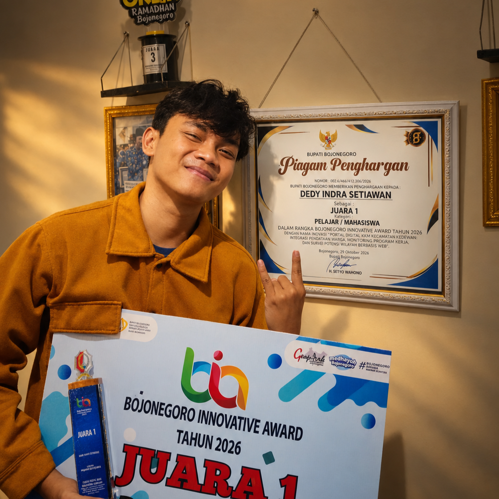

Dedy Indra Setiawan
Mahasiswa Pendidikan Teknologi Informasi
Penyusun bukuTentang penyusun
Mahasiswa aktif Program Studi Pendidikan Teknologi Informasi di IKIP PGRI Bojonegoro, sekaligus praktisi multimedia dan perfilman dengan rumah produksi sendiri, Bungnema Pictures.
Memiliki pengalaman kepemimpinan di lebih dari 25 organisasi, kepanitiaan, dan kegiatan kemasyarakatan, khususnya di bidang dokumentasi, media sosial, produksi video, dan administrasi kegiatan.
Pengalaman itulah yang melatarbelakangi buku Manajemen Organisasi Mahasiswa. Angket ini disusun untuk memastikan isi buku berangkat dari kondisi ormawa yang sebenarnya, bukan dari asumsi.
Pengalaman organisasi pilihan
Founder dan Ketua Umum
UKM Multimedia IKIP PGRI Bojonegoro
Koordinator Kecamatan
Kuliah Kerja Mahasiswa (KKM) IKIP PGRI Bojonegoro
Ketua Divisi Humas
Seminar Nasional dan Gelar Karya, UKM Penalaran dan Riset
Pimpinan Produksi & Pilot Drone
Tim PDD Gesit Run 2026 IKIP PGRI Bojonegoro
Sekretaris
Saka Wira Kartika Pangkalan Koramil 12 Kasiman
Delegasi Indonesia–Malaysia
Program Move and Impact, Kembara Mobility
Buku dan modul
- Seni Memvisualisasikan Naskah (buku)
- LA LA WAR: Sutradara Medan Laga (e-novel)
- Bungnema Manual Book (e-buku)
- Handbook Anggota UKM Multimedia (e-book)
- Modul Pengantar Multimedia (e-book)
- Modul Film: Ekosistem Produksi Film dan Manajemen Kru
- Modul Film: Fondasi Penceritaan dan Penulisan Naskah
Prestasi pilihan
- Juara 1 Short Movie Tingkat Nasional 2024
- Juara 1 Poster Tingkat Nasional 2024
- Juara 1 Lomba Cerpen Tingkat Karesidenan 2026
- Juara 2 Content Creator Competition 2024
- Nominasi Khusus Cerita Terbaik Tingkat Nasional 2025
- Nominator Pemuda Pelopor Kabupaten Bojonegoro 2024 dan 2025
- Hak Kekayaan Intelektual (HKI) untuk film “Bantara”
Bantu buku ini lahir dari kebutuhan nyata
Luangkan beberapa menit untuk mengisi angket. Jawabanmu anonim dan sangat berarti.